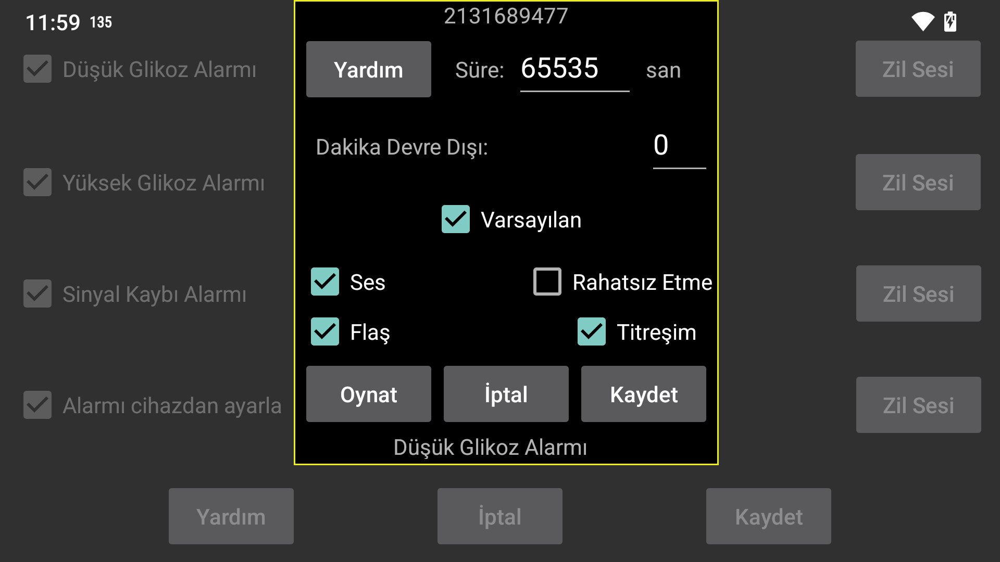

be de fr it nl pl pt ru tr uk zh en
Bir alarm veya bildirim için hangi zil sesinin kaç saniye boyunca çalınacağını seçin.
Dakika Devre Dışı: Düşük veya yüksek glikoz seviyesi devam ederse, alarm hemen tekrar çalmaz. Durum devam ederse, alarmın kaç dakika sonra tekrar üretilmesi gerektiğini belirleyebilirsiniz.
Ses: Ses etkin.
Varsayılan: Varsayılan ses'i kullanır.
Seç: Bir zil sesi seçin. Bazı Samsung telefonlarda önceden yüklenmiş zil sesi seçici uygulaması çöker, bu nedenle diğer uygulamalar tarafından kullanılabilen farklı bir zil sesi uygulaması yüklemeniz gerekir. Örneğin: https://play.google.com/store/apps/details?id=com.centralparkapps.ringo.ringtones, https://apkcombo.com/ringtone-picker/de.kumpewo.ringtones
Titreşim: Titreşim etkin.
Rahatsız Etme: "Rahatsız Etme" açıksa, alarm çalmadan önce kapatın. Juggluco bunun için gereken izne sahip değilse, bu izni vermek için bir Android ayarları ekranına yönlendirileceksiniz. "Rahatsız Etme" özelliğini açıp Oynat tuşuna basarak, alarmların "Rahatsız etmeyin" sırasında çalışıp çalışmayacağını test edebilirsiniz. Juggluco'nun önceki sürümünde, "Rahatsız etme" alarmdan sonra tekrar açılıyordu. Mevcut sürümde öyle değil, çünkü alarm çaldığında bu durumun otomatik olarak kapatılmaması istenmeyen bir etkiye sahipti. “Rahatsız Etmeyin” sırasında alarmları duymak istemiyorsanız, muhtemelen önceki ekranda “Alarmı cihazdan ayarla” ayarını da kaldırmanız gerekir.
Flaş: El feneri flaş ışığına sahip akıllı telefonlar aynı saniye sayısı kadar flaş yapma seçeneğine sahiptir. Zil seslerine izin verilmediği ve flaş ışığıyla ilgili net bir politika olmadığı durumlarda kullanışlıdır.